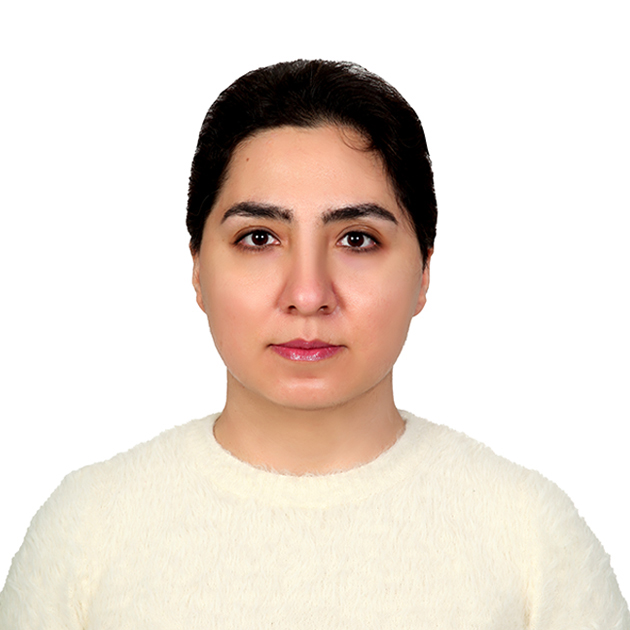

Dr. Jun Wan received his Ph.D. degree in Physics from Queen's University, Kingston Ontario, Canada, followed by postdoctoral training in bioinformatics at Johns Hopkins University School of Medicine. Prior to Indiana University in December 2016, Dr. Wan was a research faculty at Johns Hopkins University. As an associate professor, Dr. Wan is directing Collaborative Core for Cancer Bioinformatics (C3B) shared by NCI-comprehnesive cancer center, Indiana University Simon Comprehensive Cancer Center (IUSCCC), and another NCI-designated cancer center, Purdue University Center for Cancer Research (PUCCR).
Office: HS 5013, 410 W 10th street, Indianapolis IN 46202
Phone: 317-278-6445 (Office)
Current lab members

Dr. Jun Wan (CV)
Principal Investigator
Dr. Sheng Liu
Dr. Liu is an Assistant scientist and Project Manager of C3B. Some of his interests are computational biology, gene regulation, and machine learning.

Kailing Li
Kailing Li, is a Ph.D. student in Bioinformatics. He got his Computer Science Master's degree from SUNY - University at Albany. His research interest is applying machine learning techniques to biomedical data.
Dr. Shirzat Sulayman
Shirzat Sulayman is a postdoc fellow in Dr. Wan's lab. His research interests mainly involve single-cell multi-omics, especially snRNA-seq and scATAC-seq. He focuses on combining available softwares with self-developed algorithm to create new tools and pipelines for single-cell sequencing data to investigate the aberration of gene regulation network in response to external stimuli in various disease models.

Xiashiyao Zhang
Shiyao is a PhD student in Bioinformatics. Her current interest is the application of machine learning to drug response prediction. She has an axolotl named Jadeite.

Sandali Dewni Lokuge
Sandali is a Ph.D. student in Bioinformatics. She completed her bachelor’s in computer engineering. Her research interest is applying computational approaches to omics data, especially to analyze gene regulatory networks and non-coding RNAs.

Dr. Elnaz Pashaei
Dr. Elnaz Pashaei joined Dr. Wan's lab in November 2022 as a postdoctoral researcher. She received her Ph.D. in computer engineering from Yildiz Technical University, Istanbul, Turkey in 2017. She worked as an Assistant Professor in the Department of Software Engineering at Istanbul Aydin University in Turkey between 2018 and 2022. Her research interests include machine learning, artificial intelligence, bioinformatics, and computational biology. Her research primarily focused on developing new gene selection and prediction methods based on Nature-inspired algorithms, improving swarm intelligence algorithms and applying them to various optimization problems, predicting key driver genes in disease-related subnets, and improving medical diagnosis reliability using enhanced AI algorithms.

Li Sun
MS Data Science @ IUB
Electrical Engineer @ Schneider Electric
Alumni
Dr. Yucheng Zhang
Now Senior Life Science Scientist at High Performance Computing Department, Purdue University

Dr. Jilong Bian
Now faculty at Northeast Forestry University in China.

Shuyi Fang
Now Bioinformatics Scientist at the Burning Rock Biotech.
Audrey Wang
Now undergraduate student at Cornell University.